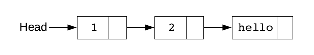

Introduction to Clojure
Why Clojure?
The Bond Nightly Release Candidate Automation System is entirely based on Clojure, a powerful functional programming language which targets mainly the Java Virtual Machine (JVM). Unlike other solutions of this kind, Bond does not come with a distinctive Domain Specific Language (DSL) for the implementation of build sequences, also known as build pipelines, but instead uses the same programming language to implement these. This allows increased flexibility and ultimately more consise formulation of software build processes. Furthermore, since the implementation of the control server and of build sequences descriptions are based on the same idioms, the build runtime system itself can be extended relatively easily.
Clojure offers numerous other advantages. The most important of these in this context is its REPL based runtime development environment which allows to make changes to the implementation without the need to stop and recompile a given application. The result is an extremly compact runtime implementation for the build execution of approximately 500 lines of code only.
However, it is of course necessary to get familiar with the Clojure programming system at least to some extent. The purpose of these help pages is to help newcomers to get started with the build description syntax and the basics of Clojure as quickly as possible.
Please note, however, that this is not a comprehensive description of the Clojure programming language and its development tools. This manual is limited to the minimum necessary to understand the concept of the 'build descriptions' which are most relevant in this context.
For further information we recommend the website clojure.org as first point of entry. For those who prefer a printed manual we recommend the titles Programming Clojure from Alex Miller, Stuart Halloway and Aaron Bedra for an easy start and The Joy of Clojure from Stuart Halloway for a discussion of more advanced concepts. For a brief introduction about the reasoning of the Clojure Programming Language we encourage you to listen to the lecture The Value of Values from the Creator of Clojure himself, Rich Hickey.
First Steps
The infamous hello world program in Clojure is just one line of code:
(println "Hello, World!")
It is immediately noticeable that, in contrast to most programming languages, the opening parenthesis is placed before the function name. This may seem strange at first sight. But there are good reasons for this notation. It is because Clojure is actually a dialect of Lisp whose specific characteristic is that all instructions including those for control flow are expressed in the form of data structures. This allows to provide a much simpler parser and compiler stage which is usually integrated in the programming environment itself and mostly refered to as REPL which stands for Read Eval Print Loop. Its efficiency will become clear later on.
Core Data Structures
Lists
The above instruction which prints out 'Hello, World!' is actually the most fundamental list data structure which is inherited from the Lisp programming language and enclosed by paranthesis and whose elements are separated by a blank characters. By default the first element of a list denotes a function name and the remaining elements are the arguments which are passed to that function call. Lisp stands for nothing else than LISt Processing for this reason.
If we prevent the function println in the above example from being evaluated, then we get the list structure itself. This can be done by preceding an apostrophe to the list:
'(println "Hello, World!")
But lists can be also expressed explicitly by the list function as in example:
(list 1 2 "hello")
Note that the list elements do not need all to be of the same type. In the above example the first two elements are of numeric integer type while the last element is a string. The elements of a list are single connected as depicted in the following illustration:

It follows that we can efficiently append elements only at the beginning of the list because appending an element to the end of a list would require to iterate over all elements. Three fundamental operations operation are provided not only for lists but for all data structures in Clojure:
- first
- Returns the first element of a list.
- rest
- Returns a new list with all elements except the first.
- conj
- Appends an element efficiently. In case of lists the element is appended to the head of the list.
The following examples illustrate how these operations are used:
(first (list 1 2 "hello")) -> 1 (rest (list 1 2 "hello")) -> (2 "hello") (conj (list 1 2 "hello") 0) -> (0 1 2 "hello")
The build sequences in Bond are just Clojure lists or build steps. When a step has been successfully executed the lists of remaining build steps is replaced by the rest of of the current build step list and the processing goes on until all elements have been executed.
Vectors
Like lists vectors provide a ordered sequence of elements. They are declared with square brackets. On contrast to lists they allow to access efficiently arbitrary elements. Furthermore new elements are appended to the end of a vector. The following examples illustrate how vectors are used:
[1 2 "hello"] -> [1 2 "hello"] (first [1 2 "hello"]) -> 1 (rest [1 2 "hello"]) -> (2 "hello") (subvec [1 2 "hello"] 1) -> [2 "hello") (conj [1 2 "hello"] 0) -> [1 2 "hello" 0]) (nth [1 2 "hello"] 1) -> 2
Note that the rest function returns a list instead of a vector and needs to iterate over all list elements. It is recommended to use the function subvector instead which operates on vectors specifically and more efficiently. The function conj appends in the given case to the end of the vector.
Lists are usually more appropriate when all elements need to be iterated. They provide a stack based, first in, first out (fifo) access characteristics. As already explained functions are just lists where the first element denontes the function name.
Vectors are preferred when elements need to be accessed by index. They provide an queue based access characteristics (lifo). Vectors are used to declare function arguments and local bindins as we will see later on.
Maps
Maps are collection data types that map keys to values. The keys and the values can be arbitraty Clojue data types. Maps are declared with curly brackets as illustrated below:
(def day-of-week {1 "Monday" 2 "Thuesday" 3 "Wednesday" 4 "Thursday"
5 "Friday" 6 "Saturday" 7 "Sunday"})
(day-of-week 1) -> "Monday"
In the given example we define the variable days-of-week with a map where each day of week can be accessed via its associated index.
In many cases the consideration is to use an unique identifier for a specific value as key. With the so called keyword, Clojure provides a specific data type for this:
(def weekday-index {:Monday 1 :Thuesday 2 :Wednesday 3 :Thursday 4
:Friday 5 :Saturday 6 :Sunday 7})
(weekday-index :Monday) -> 1
(:Monday weekday-index) -> 1
Unlike the previously used strings and integer key values, keywords can be used like function invocations as illustrated in line 4 in the previous example. So the third and the fourth line in this example are synomymous
The data structures can be arbitrarily nested. In example the value in vectors can be maps which can include another map and so on. This allows to define rather complex data models.
All data in Clojure is managed in a functional or, as denoted in Clojure, persistent way. That means that by default an existing variable is never changed when new elements are added or removed. We illustrate this behavior in following example using a map:
(def rgb-colors-1 {:red [255 0 0] :green [0 255 0]})
(def rgb-colors-2 (assoc rgb-colors-1 :blue [0 0 255]))
rgb-colors-1 -> {:red [255 0 0] :green [0 255 0]}
rgb-colors-2 -> {:red [255 0 0] :green [0 255 0] :blue [0 0 255]}
Note that the definition in line 3 is not changed by the association of a new element in line 4. Instead the data in the variable rgb-colors-1 is just extended and the values for the keys :red and :green are re-used in rgb-color-2. Operations where the value of a variable needs to be acutally changed are required to be expressed explicitly as a transaction. Such values are denoted as state and require special attention when used in multi-threaded operations in all programming languages. On contrast, Clojure uses functional and thread save data types wherever possible.
Functions
In Clojure functions are first-class and can be passed-to or returned-from other functions. In the following example we define a simple function which adds two variables and assign it to the variable add:
(def add (fn add [a b] (+ a b)))
The variables of the function are declared inside square brackets. The body of the function (+ a b) is just the invocation of Clojure's build in function +. We could achieve a similar effect by:
(def add +)
Since a clojure program consists out of a lot of top level function definitions there is short cut which defines a functions and assigns it to the specified identifier with defn:
(defn add "adds the two arguments a and b and returns the result" [a b] (+ a b))
In this example we declare a comment about what the function does in the seconds line, a so called doc string. Doc strings can be retrieved via Clojure's help system and are also used within API documentation generators.
Bindings and Destructuring
Bindings allow to bind temporary values to local variable. This helps to deal with large and nested data structures. We illustrate the concept by the following example. Assume we want to describe the specifications of a compilation process with a Clojure hash-map:
(def my-build-description
{:build-machine {:host "localhost" :port 22}
:build-name "project-xyz"
:build-date (str (java.util.Date.))
;; ...
})
In this very simplified case the parameters of the build process are stored under the keys build-machine, build-name and build-date where build-machine contains another hash-map with the element host and port. It is very helpful to associate local bindings to these elements e.g. in case they are used in mutliple times in a function. The following example illustrates how this is done using the Clojure form let:
(defn print-build-description
"print build-description tags to stdout"
[build-description]
(let [build-machine (:build-machine build-description)
build-name (:build-name build-description)
build-date (:build-date build-description)]
(println build-machine build-name build-date)))
The bindings which are created by let do have local scope only. They are also refered to as local bindings for this reason. Local bindings have precedence over variable names or bindings from an upper layer as the following example illustrates where we invoke the function print-build-descrition:
(let [build-name "ABC"]
(print-build-description my-build-description)) -> {:host localhost, :port 22} project-xyz Sun Feb 23 13:16:54 CET 2020
The inner binding of the symbol build-name to the contents of hash-map my-build-descriptions overrule the definition of the outer contents "ABC" in the above example.
In the definition of the function print-build-description the extraction of hash map's values for the given keys is still repetetive. Clojure provides dedicated so called destructuring mechanism to further simplify that as illustrated in the following example:
(defn print-build-description
"print build-description tags to stdout"
[build-description]
(let [{:keys [build-machine build-name build-date]} build-description]
(println build-machine build-name build-date)))
This version of print-build-description is synonymous with the first definition but much shorter. In the context of the declaration of build descriptions descructuring is frequently used.
The Bond framework provides an additional macro which kind of inverts the destructuring operation. Often it is required to rebuild the originally complex data structure that has been provided e.g. via and input parameter. Instead of repeating key-value pairs to do so the macro hash-args generates a hash-map where the keys correspond to the given symbols as illustrated in the following example:
(defn extend-build-description
"adds another key-value to a given build-description"
[build-description]
(let [{:keys [build-machine build-name build-date]} build-description
{:keys [host port]} build-machine
version "v1.2.3"]
(hash-args host port build-name build-date version)))
Here we destructure the host and port symbols and return a flat hash map with these values:
(extend-build-description my-build-description) ->
{:host localhost, :port 22, :build-name project-xyz,
:build-date Sun Feb 23 13:16:54 CET 2020, :version v1.2.3}
This basically wraps all the concepts up which are typically used in a so called build-description which is the fundamental building block of the Bond nightly release system. It follows a very brief explanation of fundamental Clojure's control structures. For a more detailed discussion refer to further documentation e.g. the Clojure Website.
Control Structures
Iterating over Sequences
Clojure offers numerous operations to iterate over sequences. Two of them we will shortly illustrate in the following example. Refer to the sequences documentation on clojure.org for more detailed information. Most frequently we want to apply an operation to each element of a sequence and store the results in another sequence. This operation is refered as map within Lisp languages:
(map (fn [e] (* e e)) [0 1 2 3]) -> (0 1 4 9)
Map takes a function and a sequence as input arguments. The function is applied to each element of the sequence to create the result. The expression is often found to be formulated more concisely. The following line is synonymous but shorted:
(map #(* % %) (range 4)) -> (0 1 4 9)
The second most important sequence operation is reduce. It iterates over sequence elements and accumaltes the result. In the following example we use reduce to sum up the square values of the previous example:
(reduce (fn [res e] (+ res (* e e))) 0 (range 4)) -> 14
Map and reduce can be applied to all of Clojure's sequence data types. When appropriately used, they allow to implement many data processing functions without using distinctive loops in a condensed and expressive way.
Conditionals
The infamous if-then-else statement is a function in Clojure as well which returns the result of either the if or the else clause. It takes up to three arguments, the condition expression, the if clause and optionally the else clause:
(defn multiple-of-two [x] (if (even? x) "yes" "no")) (multiple-of-two 17) -> no
The above example is a little bit odd and would be typically formulated as:
(defn multiple-of-two? [x] (even? x))
The function returns the directly boolean result value of the operation even? where questionmark indicates that the boolean getter characteristics of this function.
There are cases where more than one expression needs to evaluated within an if clause. This usually happens wit the expressions which have site effects. An is considered as purely functional when it does not have site effects. A typical site effect is I/O as in depicted in the following example:
(let [logging-enabled true]
(reduce
(fn [res e]
(if logging-enabled
(do (println "The next element is: " e)
(println "The current result is: " res)
(println)))
(+ res (* e e)))
0
(range 4)))
This version of the previously used recude example comes with debug print operations which can be enabled and disabled by the enclosing binding logging-enabled. When this evaluates to true, we need to evaluate more then one expression to print out all the results. We use the form do to group these operations together. The last expression in the form do determines its result. Without it Clojure would generate an error because the if clause has then more than three arguments.
The Clojure macro when works similar to the form if but takes just one condition and an arbitary number of expressions as arguments which are all evaluated when the condition is true. The following example corresponds to the previous one but uses when instead of if:
(let [logging-enabled true]
(reduce
(fn [res e]
(when logging-enabled
(println "The next element is: " e)
(println "The current result is: " res)
(println))
(+ res (* e e)))
0
(range 4)))
Loops
Like in other Lisp dialects Clojure implements loops recursively as depicted in the following example:
(defn square-sum
[res remain]
(let [e (first remain)]
(if e
(recur (+ res (* e e)) (rest remain))
res)))
Here we define a function square which recursively invokes itself until there are no more elements in the sequence remain. The recurive invocation is realized with the form recur which must be the last expression in the enclosing context. It has the same effect as invoking square but releases the otherwise kept in memory stack. The concept is called tail call optimization and in contrast to other Lisps needs to be expressed in Clojure explicitly with the recur form.
We are going to illustrate the difference between recursive looping using tail call optimization and stack based recursion in the following example. At first we invoke the previous implementation which uses recur:
(square-sum 0 (range 10000)) -> 333283335000
When we replace recur by the non optimized call to square as illustated here:
(defn square-sum
[res remain]
(let [e (first remain)]
(if e
(square (+ res (* e e)) (rest remain))
res)))
we get the following result:
(square-sum 0 (range 10000))
-> Execution error (StackOverflowError)
because in this case the 10.000 invocations of square consumed the complete stack of the JVM!
Because of the recursive characteristics of the function square we need to always invoke it with the exclusively internally used result argument 0 and with a sequence as input arguments. The macro loop can be used to create an inner and anonymous version of the recursion and thus allows to ommit the 0 argument and to generate the squence internally as depicted in the following:
(defn square-sum
[x]
(loop [res 0
remain (range (inc x))]
(let [e (first remain)]
(if e
(recur (+ res (* e e)) (rest remain))
res))))
Note that the range function does not include the last value so (range 3) generates the values 0, 1, 2 only. We therefore increase the input argument x by one to include 3 into the square-sum generation. We can now invoke square-sum with a single scalar argument:
(square-sum 3) -> 14
Note that this function can be formulated much more condensed by
(defn square-sum [x] (reduce (fn [res e] (+ res (* e e))) (range (inc x))))
The initial value for the accumulator has been ommited in this example. Refer to the documentation about reduce for further exaplanation.
As already indicated looping can be replaced by appropriate sequence operations which are usually more condensed and expressive. But cases exist where the low level recursive implementation might still be more appropriate.
What is left out?
Concratulations! If you could follow these examples, then you have understood the most important aspects of Clojure and functional programming in general already. However, there are several aspects which we could not discussed in this minimalist introduction. These are:
- Dealing with Concurrency
- Exception Handling
- Namespaces
- Lazy Evaluation
- Macros
- Working with Java
- The Clojure Build System
- Clojurescript to reach the Browser
We hope that we could rise your interest and you are encouraged to continue your journey to get familiar with these as well. We already gave hints where to go next in the beginning of this page.Have a good start and a lot of fun with functional programming!